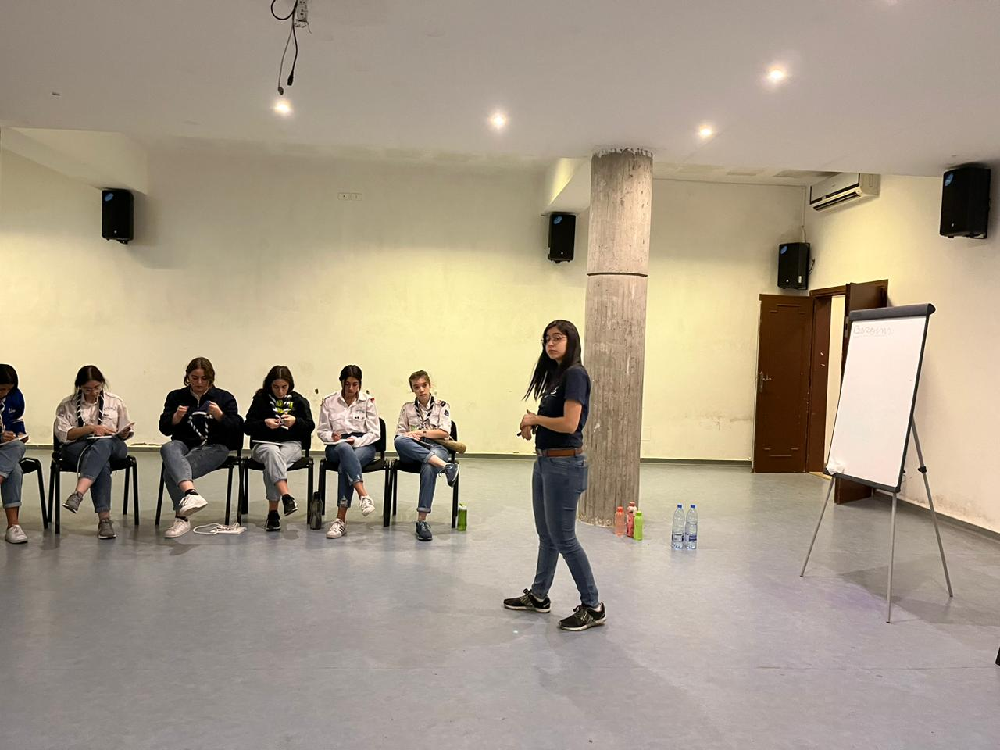

Engaging in Guiding (Scouts activity), over the years, has led me to attend several trainings of all topics and subjects.
Recently, I have particpated in a TOT seminar, which now allows me to plan, prepare, and carry out training plans.
Which has led me to gain a lot of experience in soft skills, from the these trainings. Notably in:
- Leadership
- Communication
- Critical Thinking
- Public Speaking